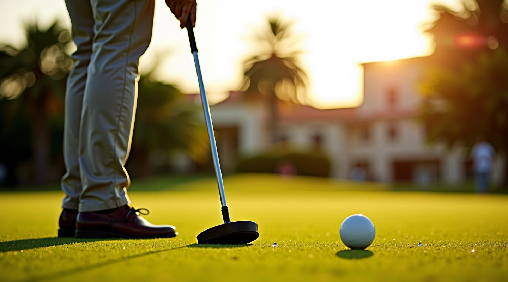
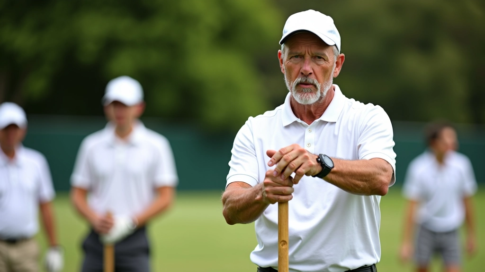

تكتيكات الكرة المركزية في كروكيه الجولف
اتقن استراتيجيات اللعب المتقدمة والسيطرة على الملعب
ما يميز برنامجنا
نحن نركز على التطبيق العملي والتدريب المنهجي

تدريب متخصص
نحن نؤمن بأن التدريب الجيد يبدأ بالأساسيات. كل جلسة تركز على تحسين مهارة واحدة أساسية — سواء كانت الضربة أو الحركة أو القراءة الاستراتيجية. المدربون لدينا لديهم خبرة عملية في اللعبة وليسوا مجرد معلمين نظريين.
- ضربات أساسية وأنماط متقدمة
- قراءة الملعب والتخطيط الاستراتيجي
- تمارين عملية على الملعب الفعلي
الكرة المركزية
السيطرة على الكرة المركزية تعطيك مميزات استراتيجية كبيرة. نشرح كيفية استخدامها بشكل فعال في مختلف حالات اللعب.
التحكم بالحركة
ليس كل ضربة قوية هي الأفضل. تعلم كيفية التحكم بسرعة وتوجيه الكرة بدقة في أي موقف على الملعب.
القراءة الاستراتيجية
اللاعبون الأفضل يقرأون اللعبة قبل تنفيذ الحركة. نعلمك كيفية التخطيط بخطوات متقدمة.
ثلاث مهارات يجب إتقانها

الضربة الأساسية
كل شيء يبدأ بضربة صحيحة. موضع القدمين والقبضة والحركة المثالية للذراع — كل تفصيل مهم.

الكرة المركزية
السيطرة على الكرة المركزية تعني السيطرة على اللعبة. تعلم الحركات الاستراتيجية والمواضع الدفاعية.

التمارين اليومية
أفضل اللاعبين يتدربون بانتظام. تمارين عملية بسيطة يمكنك فعلها في أي ملعب.
مع التدريب الصحيح والبدون
بدون تدريب منظم
ضربات غير منتظمة وتحتاج لتحسين مستمر
عدم فهم الاستراتيجيات الأساسية للعبة
صعوبة في قراءة مواضع الكرات والملعب
تقدم بطيء وإحباط متكرر
عدم الثقة في المواقف الضاغطة
مع برنامجنا
ضربات دقيقة وموثوقة في كل موقف
فهم عميق للاستراتيجيات والتكتيكات
قراءة سريعة وصحيحة لحالات اللعبة
تقدم واضح وملموس في كل جلسة
ثقة عالية عند اللعب في البطولات
القيم التي نؤمن بها
كل ما نفعله يعتمد على هذه المبادئ الأساسية
التطبيق العملي
لا نعلم النظرية فقط. كل درس يتضمن تمارين على الملعب الفعلي حتى تتمكن من استخدام ما تعلمته فوراً.
الوضوح والشفافية
نشرح كل حركة وكل قرار. أنت تفهم لماذا تفعل الأشياء بهذه الطريقة وليس مجرد اتباع تعليمات.
احترام مستويات مختلفة
سواء كنت مبتدئاً أو لاعباً متقدماً، لدينا برامج تناسب مستواك الحالي وتدفعك للأمام.
المتعة والالتزام
التدريب الجاد لا يعني الملل. نحافظ على البيئة ممتعة وتحفيزية حتى تستمتع بتحسن مستواك.
ما الذي تريد أن تعرفه
إجابات سريعة عن أكثر الأسئلة التي نسمعها
هل يمكنني البدء إذا كنت مبتدئاً تماماً؟
بالتأكيد. اللاعبون الجدد يمكنهم البدء بدون خبرة سابقة. نبدأ من الصفر ونتدرج تدريجياً حسب سرعتك الخاصة.
كم مرة يجب أن أتدرب في الأسبوع؟
هذا يعتمد على أهدافك. حتى جلسة واحدة في الأسبوع ستظهر نتائج ملموسة. لكن لو كنت تريد تقدماً سريعاً فثلاث جلسات مثالية.
ما الذي أحتاجه من معدات؟
نحن نوفر المضارب والكرات والأدوات الأساسية. تحتاج فقط لملابس رياضية مريحة وحذاء رياضي جيد.
هل هناك عمر معين للبدء؟
الكروكيه لعبة للجميع. يمكنك البدء من 8 سنوات وحتى أي عمر. اللياقة والمتعة هي ما يهم.
كيف أعرف أنني أتحسن؟
ستلاحظ تحسناً واضحاً في دقة ضرباتك وقراءتك للملعب خلال 3-4 أسابيع. نتابع تقدمك في كل جلسة.
هل يمكنني المشاركة في البطولات؟
نعم، نحن نساعد لاعبينا على الاستعداد للبطولات المحلية والدولية. هذا جزء من برنامجنا المتقدم.
أدلة عملية وشاملة
نقاشات تفصيلية عن كل جانب من جوانب اللعبة
إتقان الضربة الأساسية: من البداية إلى الاحترافية
تعلم كيفية تنفيذ الضربة الأساسية بشكل صحيح. نغطي موضع القدمين، قبضة المضرب، والحركة المثالية للذراع
اقرأ المزيد
تكتيكات الكرة المركزية: السيطرة على اللعبة
اكتشف كيفية استخدام الكرة المركزية للسيطرة على اللعب. نشرح الحركات الاستراتيجية والمواضع الدفاعية التي تعطيك الأفضلية
اقرأ المزيد
تمارين يومية تحسّن دقتك وقوتك
أفضل اللاعبين يتدربون بانتظام. إليك خمس تمارين عملية يمكنك فعلها في أي ملعب لتحسين مستواك
اقرأ المزيدهل أنت جاهز للبدء؟
لا تتردد في الاتصال بنا. نحن هنا للإجابة على أسئلتك والمساعدة في اختيار البرنامج المناسب لك
نستخدم ملفات تعريف الارتباط لتحسين تجربتك على موقعنا. بالمتابعة، أنت توافق على سياسة ملفات تعريف الارتباط لدينا.